When you apply a modifier to a view, we are most of the time creating a new view that wraps the original view to add some extra behavior or styling – this is something I’ve said a few times now, but it matters!
This isn’t always the case. One common example is Text, where there are a whole batch of modifiers we can apply directly to some text without creating wrapped views, like this:
Text("Tap")
.font(.title)
.foregroundColor(.red)
.fontWeight(.black)
.onTapGesture {
print(type(of: self.body))
}When you tap that text in the simulator, you’ll see its type is still just Text – it silently just absorbs all the modifiers into itself. This is what allows us to create complex text with various fonts and colors, then use operator overloading to bring it all together into a single Text view.
You can see this for yourself in the SwiftUI interface file – search for “internal var modifiers”, and you’ll see that all Text views store an array of enum cases with associated values for their modifiers. (If you forgot the xed command to use, and the fix in case you have problems, please see the introduction to this book!)
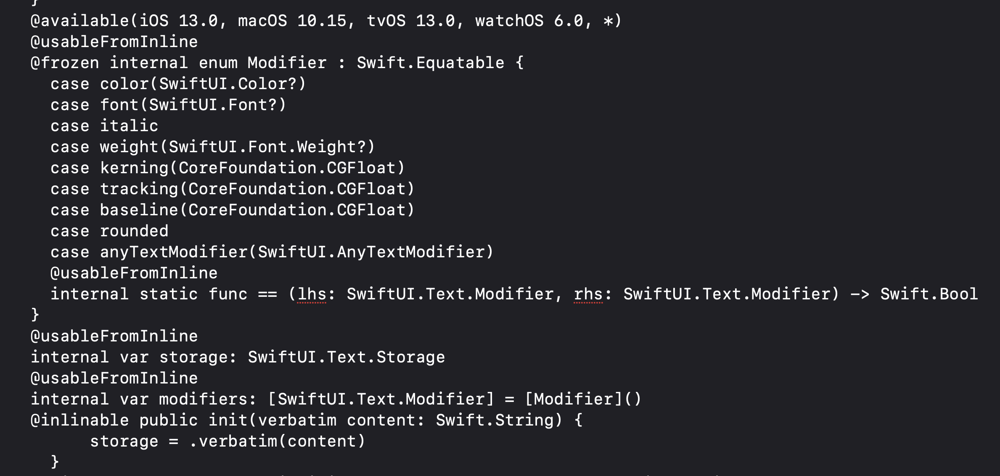
Tip: This is exactly how Text views have different natural sizes when changing the font – the font gets absorbed directly into the view, and is used as part of its size calculations.
However, there’s a whole batch of modifiers that are more complex, because they propagate changes downwards into child views. SwiftUI doesn’t mark these out very clearly, or indeed at all, but you can see them in action if we modified our code to this:
VStack {
Text("Tap")
}
.font(.title)
.onTapGesture {
print(type(of: self.body))
}Now we’re applying title() to the VStack rather than directly to Text, and the resulting type of our view will be very different – you’ll see _EnvironmentKeyWritingModifier in there.
First, this dual behavior of font() is possible because of Swift’s approach to overload resolution, which really boils down to “the most constrained wins.” In the case of font(), if you look in the SwiftUI interface file you’ll see func font is in there twice: once on Text, and once on View. Because Text is the more constrained of the two (it’s one specific struct rather than a whole group of structs that conform to a protocol), when we call font() directly on a Text view we’ll get Text.font() rather than View.font().
Second, you can see exactly why _EnvironmentKeyWritingModifier comes back in our type when you look at the font() method attached to View rather than Text: it’s marked @inlinable, which means Swift has the option of replacing a call to this View.font() method with the actual body of the method – it’s able to copy the code from the method right into our view at compile time. Obviously this requires Swift to have access to the code to copy, which is why we can see exactly what SwiftUI is doing here:
@inlinable public func font(_ font: SwiftUI.Font?) -> some SwiftUI.View {
return environment(\.font, font)
}Tip: Search the SwiftUI interface for return environment(\ to see other instances of this behavior.
So, we get two different results for font() depending on where it’s called: for Text views it gets absorbed into an internal array of enum values, but for all other views it is merely syntactic sugar that silently gets converted into the following:
VStack {
Text("Tap")
}
.environment(\.font, .title)
.onTapGesture {
print(type(of: self.body))
}The question is: why? Understanding the answer is the key to understanding the environment in SwiftUI: this approach lets a view modifier flow downwards through all the child views of our VStack, rather than just being applied to a single view – we can adjust the font of everything inside the VStack at once, even without the view internally realizing it was happening.
The power of SwiftUI’s environment is that it flows downwards to every view contained in wherever you apply it, but views only need to read a value if they care about it.
To demonstrate this, we could make a simple TextField wrapper that understands the concept of required fields by showing a small red asterisk next to required fields.
This process takes at least two steps for every new environment key you want to add. First, we make a new struct that conforms to the EnvironmentKey protocol, which requires that provide a default value for times when there is nothing in the environment:
struct FormElementIsRequiredKey: EnvironmentKey {
static var defaultValue = false
}Second, we make an extension on EnvironmentValues telling the system how to read and write our setting from the environment:
extension EnvironmentValues {
var required: Bool {
get { self[FormElementIsRequiredKey.self] }
set { self[FormElementIsRequiredKey.self] = newValue }
}
}Now we can go ahead and use it. For our TextField wrapper this means using @Environment(\.required) to read the current required state in our environment, then creating the view as normal:
struct RequirableTextField: View {
@Environment(\.required) var required
let title: String
@Binding var text: String
var body: some View {
HStack {
TextField(title, text: $text)
if required {
Image(systemName: "asterisk")
.imageScale(.small)
.foregroundColor(.red)
}
}
}
}Now we can go ahead and use the new RequirableTextField view anywhere we want it, sending in the environment value for \.required as needed:
struct ContentView: View {
@State private var firstName = ""
var body: some View {
Form {
RequirableTextField(title: "First name", text: $firstName)
.environment(\.required, true)
}
}
}Earlier I showed you how the View.font() modifier is nothing more than a wrapper around .environment(\.font), and honestly this is good practice because it makes our code easier to read. In this case it would mean adding a new View extension like this:
extension View {
func required(_ makeRequired: Bool = true) -> some View {
environment(\.required, makeRequired)
}
}With that in place, we can now just called required(), like this:
RequirableTextField(title: "First name", text: $firstName)
.required()Tip: As you can see, making the Boolean parameter have a default value of true makes for much more natural use at the call site – saying required() is the same as required(true).
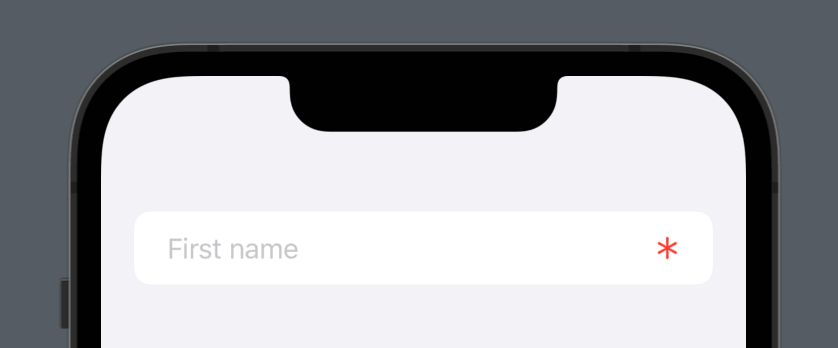
Now, as we’re applying required() directly to our custom text field, the environment approach might seem overkill – why not just pass it directly into the RequirableTextField initializer?
Well, consider code like this:
struct ContentView: View {
@State private var firstName = ""
@State private var lastName = ""
@State private var makeRequired = false
var body: some View {
Form {
RequirableTextField(title: "First name", text: $firstName)
RequirableTextField(title: "Last name", text: $lastName)
Toggle("Make required", isOn: $makeRequired.animation())
}
.required(makeRequired)
}
}Now we’re making the whole form required at once, which flows the environment key downwards into each text field automatically – they could even have been in a different subview entirely, but would still have been able to access the environment data.
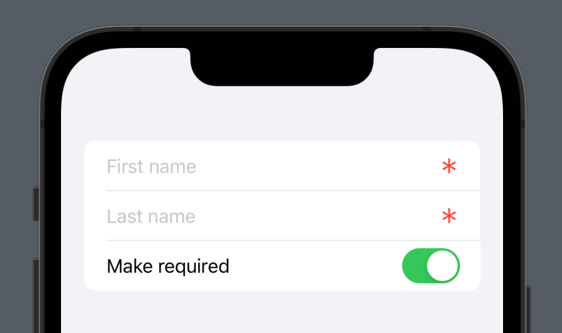
I’d like you to try making a custom environment key now: can you create one that stores a stroke width for all the shapes you want to draw?
Have a go and see how you get on! I’ll add my solution below.
First, we need to define the custom environment key and an extension on EnvironmentValues:
struct StrokeWidthKey: EnvironmentKey {
static var defaultValue = 1.0
}
extension EnvironmentValues {
var strokeWidth: Double {
get { self[StrokeWidthKey.self] }
set { self[StrokeWidthKey.self] = newValue }
}
}We could even add a View extension if you wanted:
extension View {
func strokeWidth(_ width: Double) -> some View {
environment(\.strokeWidth, width)
}
}Now we can go ahead and use it with some drawing:
struct CirclesView: View {
@Environment(\.strokeWidth) var strokeWidth
var body: some View {
ForEach(0..<3) { _ in
Circle()
.stroke(.red, lineWidth: strokeWidth)
}
}
}And then set that value at some higher point in the environment, like this:
struct ContentView: View {
@State private var sliderValue = 1.0
var body: some View {
VStack {
CirclesView()
Slider(value: $sliderValue, in: 1...10)
}
.strokeWidth(sliderValue)
}
}Tip: We’ll be using StrokeWidthKey and CirclesView in the next chapter, so stash your code somewhere safe and put mine in its place for easier reference.
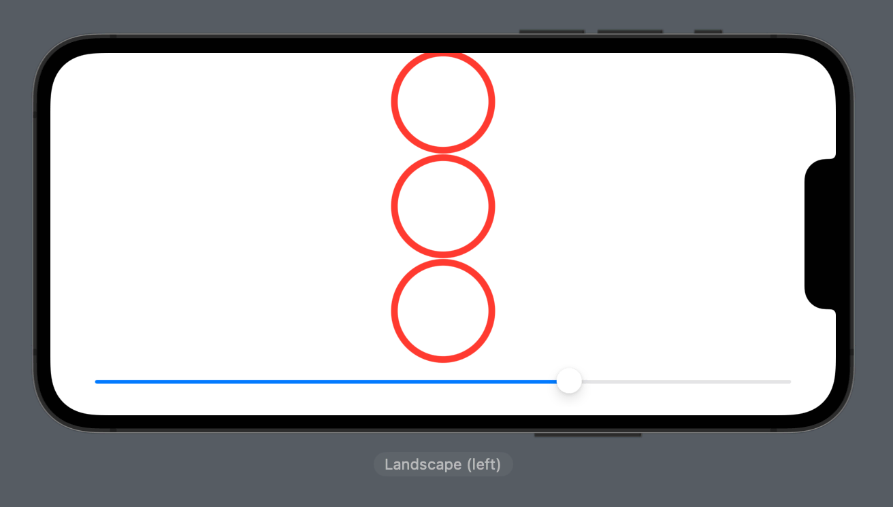
We can write any kind of data into environment keys, but the environment never watches for changes in observable objects. This means if you try to store a class in there then update it, the environment won’t know to update any views that are watching.
In practice, this makes @Environment more suited to value type data, as compared to @EnvironmentObject, which is specifically designed to store class instances – the clue is right there in the name.
There are two compelling reasons why, where possible, you should aim to use simple environment keys rather than passing in environment objects.
The first is simple: the EnvironmentKey protocol requires that we provide a default value for any custom keys we create, whereas environment objects can be missing entirely – and will trigger a hard crash in your code when this happens. Yes, in theory this is the kind of thing we should spot in development, but “should” in software development really means “might”, so why leave things up to chance?
The second is a little more complex: when an observable object announces that it has changed, SwiftUI makes all views that use it get refreshed. That sounds straightforward, but it has an important impact for times when we are publishing lots of data, only some of which views might care about.
To demonstrate this, we could add another custom environment key alongside the StrokeWidthKey we made in the previous exercise, this time to store the font that should be used for title text:
struct TitleFontKey: EnvironmentKey {
static var defaultValue = Font.custom("Georgia", size: 34)
}
extension EnvironmentValues {
var titleFont: Font {
get { self[TitleFontKey.self] }
set { self[TitleFontKey.self] = newValue }
}
}Again, we could make a View extension to make it easier to access:
extension View {
func titleFont(_ font: Font) -> some View {
environment(\.titleFont, font)
}
}Now we can send both values into the environment, like this:
struct ContentView: View {
@State private var sliderValue = 1.0
@State private var titleFont = Font.largeTitle
var body: some View {
VStack {
CirclesView()
Text("Hello, world!")
.font(titleFont)
Slider(value: $sliderValue, in: 1...10)
Button("Default Font") {
titleFont = .largeTitle
}
Button("Custom Font") {
titleFont = TitleFontKey.defaultValue
}
}
.strokeWidth(sliderValue)
.titleFont(titleFont)
}
}That works great: the stroke width in CirclesView changes with the slider, and the font style in ContentView changes as the buttons are pressed.
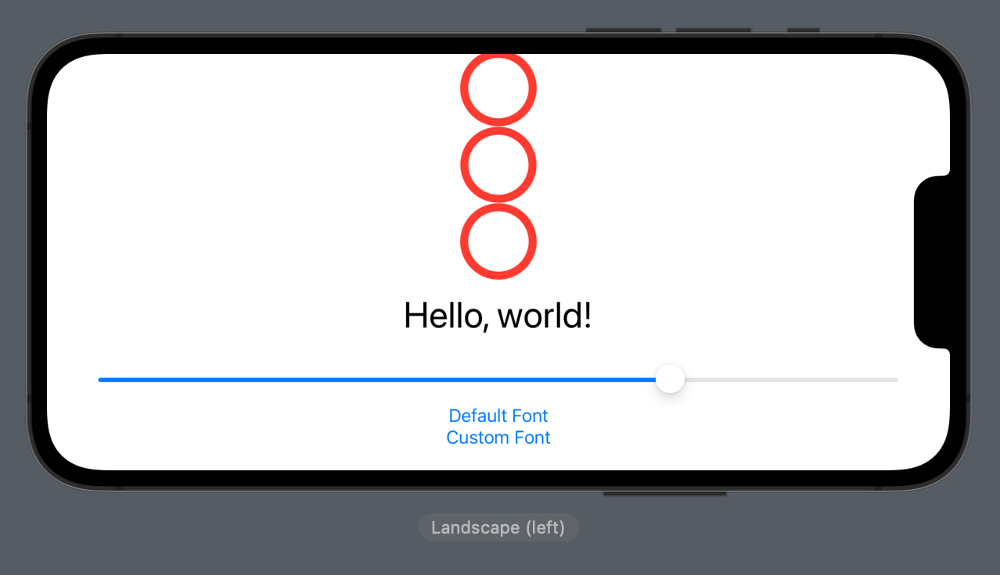
I’d like to add one more line of code so you can see what’s going on – modify the body property of CirclesView to this:
var body: some View {
print("In CirclesView.body")
return ForEach(0..<3) { _ in
Circle()
.stroke(.red, lineWidth: strokeWidth)
}
}That prints out a message every time body is called, which is helpful here because it lets us run the project back and see the message being printed again and again as we drag around the slider. But, importantly, it won’t be printed when pressing the buttons: those also change the environment, but SwiftUI knows CirclesView doesn’t actually use the titleFont environment key so it doesn’t need to reinvoke body.
So, that’s how environment keys work, but what happens if we had used an environment object here instead? To find out, we would start by making some kind of class to store our two values together as theme data:
class ThemeManager: ObservableObject {
@Published var strokeWidth = 1.0
@Published var titleFont = TitleFontKey.defaultValue
}In CirclesView we aren’t going to watch for precise keys, but instead we’ll expect to receive a whole environment object of theme data:
struct CirclesView: View {
@EnvironmentObject var theme: ThemeManager
var body: some View {
print("In CirclesView.body")
return ForEach(0..<3) { _ in
Circle()
.stroke(.red, lineWidth: theme.strokeWidth)
}
}
}And now in ContentView we would make an instance of that using @StateObject, the inject it into the environment:
struct ContentView: View {
@StateObject private var theme = ThemeManager()
var body: some View {
VStack {
CirclesView()
Text("Hello, world!")
.font(theme.titleFont)
Slider(value: $theme.strokeWidth, in: 1...10)
Button("Default Font") {
theme.titleFont = .largeTitle
}
Button("Custom Font") {
theme.titleFont = TitleFontKey.defaultValue
}
}
.environmentObject(theme)
}
}When you run the project now you’ll see an important difference: every time titleFont is set our "In CirclesView.body" message is printed, even though the CirclesView doesn’t care about it. This generates significantly more work for our views, with no actual benefit at all – the body property is even reinvoked if titleFont is set to its existing value!
From a SwiftUI perspective this behavior makes absolute sense: the class is sending a change notification, so SwiftUI doesn’t really have a way of checking exactly what changed inside the view – maybe strokeWidth also changed as a result of titleFont changing.
Try to think of it like this: every time you make a view use an @ObservedObject or an @EnvironmentObject, you are effectively creating a dependency on that data. It doesn’t matter if the actual body property doesn’t change as one of the @Published values changes, because if you recall Swift doesn’t perform tree diffing.
So, when you bring together the extra safety of always having a default value and the extra performance of skipping unnecessary work, I hope you can see why using environment keys are preferable where possible!
Of course, as with many things there is a middle ground: you can store your data as a shared theme, then expose it using environment key. This works when you want to be able to read and write the data in one object, but you’re still keen to avoid surprise crashes from missing data.
Using this approach we might abstract our theme information into a protocol, like this:
protocol Theme {
var strokeWidth: Double { get set }
var titleFont: Font { get set }
}We can then make structs adopting that protocol, based on whatever theme requirements we have:
struct DefaultTheme: Theme {
var strokeWidth = 1.0
var titleFont = TitleFontKey.defaultValue
}Next, we’re going to wrap that in a class that is able to publish changes as the theme updates. Apps only ever have one theme active at a time, so we could implement this as a singleton:
class ThemeManager: ObservableObject {
@Published var activeTheme: any Theme = DefaultTheme()
static var shared = ThemeManager()
private init() { }
}Now we can expose all that to the environment, focusing only on the internal Theme struct:
struct ThemeKey: EnvironmentKey {
static var defaultValue: any Theme = ThemeManager.shared.activeTheme
}
extension EnvironmentValues {
var theme: any Theme {
get { self[ThemeKey.self] }
set { self[ThemeKey.self] = newValue }
}
}We need to expose this to our views in a natural way, but we can’t just make a simple View extension this time because we need to actually watch the ThemeManager for changes. We don’t own this theme manager object because we’re using a singleton, so a simple @ObservedObject is the right choice:
struct ThemeModifier: ViewModifier {
@ObservedObject var themeManager = ThemeManager.shared
func body(content: Content) -> some View {
content.environment(\.theme, themeManager.activeTheme)
}
}And now we can wrap it up in a View extension for easier use:
extension View {
func themed() -> some View {
modifier(ThemeModifier())
}
}With that all done, we can switch ContentView over to using @ObservedObject for its theme manager, so it’s able to read and write data:
@ObservedObject var theme = ThemeManager.sharedThat means using theme.activeTheme everywhere, because now we want to modify the theme struct directly. Once that’s done, add a themed() modifier to ContentView so the active theme is sent into the environment.
The interesting part is in CirclesView, where now we can watch the environment key rather than using @EnvironmentObject:
struct CirclesView: View {
@Environment(\.theme) var theme
var body: some View {
print("In CirclesView.body")
return ForEach(0..<3) { _ in
Circle()
.stroke(.red, lineWidth: theme.strokeWidth)
}
}
}You’ll see that still triggers when the stroke width changes or when the font changes, but doesn’t change when the font is changed to its existing value – SwiftUI is smart enough to discard that.
But we can get even better: because @Environment uses a key path rather than always accepting a whole observable object like @EnvironmentObject does, we can actually tell SwiftUI we want access to only part of the theme, which means only that part of it will be a dependency for this view:
struct CirclesView: View {
@Environment(\.theme.strokeWidth) var strokeWidth
var body: some View {
print("In CirclesView.body")
return ForEach(0..<3) { _ in
Circle()
.stroke(.red, lineWidth: strokeWidth)
}
}
}And now SwiftUI will only reinvoke the body property when that one specific value changes – we’re back to where we were originally in terms of performance, while also benefiting from having the environment object available elsewhere if needed.
This approach obviously takes more work, but it gives us the ability to synchronize changes everywhere with some kind of theme control panel, but also means we get the guaranteed safety of using environment keys rather than environment objects.
As we’ve seen, SwiftUI’s environment flows down through our views, which allows parents to set some data for their children that can then be read out as needed.
For example, we might create a simple welcome view for our app:
struct WelcomeView: View {
var body: some View {
VStack {
Image(systemName: "sun.max")
Text("Welcome!")
}
}
}We could then use it somewhere else, adjusting its font as needed:
struct ContentView: View {
var body: some View {
WelcomeView()
.font(.largeTitle)
}
}That works well enough, but what if we wanted to customize the font for the SF Symbols image we’re using? Maybe our designer wants that to be much bolder, so the image stands out more clearly.
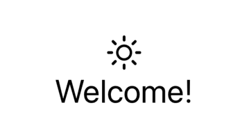
We could try adding a font() modifier to it, like this:
Image(systemName: "sun.max")
.font(.largeTitle.weight(.black))But now we’ve introduce a problem: that font will override whatever comes in from the environment, so if we later changed ContentView to use .font(.headline) instead we’ll have a mismatch – our symbol will use a large title, whereas the text below will use a headline font.
In this situation, the second font() modifier isn’t really what we meant – we don’t want to force a wholly new font, we just want to bold up whatever font we were asked to use. SwiftUI has a wholly separate modifier for this, called transformEnvironment(): it is able to transform any one specific environment key somehow, and passes us an inout reference of whatever the current value is.
So, a much better solution is to write this:
Image(systemName: "sun.max")
.transformEnvironment(\.font) { font in
font = font?.weight(.black)
}This approach is really similar to the transaction() modifier: any kind of font applied to this image will automatically be transformed using our custom closure.
We’ve seen how SwiftUI’s environment flows downwards, but sometimes you want information to flow upwards too – to send data from a child view upwards to its ancestor views.
In SwiftUI this is done using preferences, and the canonical example of this in action is the navigationTitle() modifier:
NavigationStack {
VStack {
Image(systemName: "sun.max")
Text("Welcome!")
}
.navigationTitle("MyApp")
}In that code, the VStack describes its navigation title, but that data flows upwards to the NavigationStack containing it. This makes sense from a UI perspective, because of course the navigation stack can push and pop views freely, and it needs to be able to update itself to show the titles of each of those views.
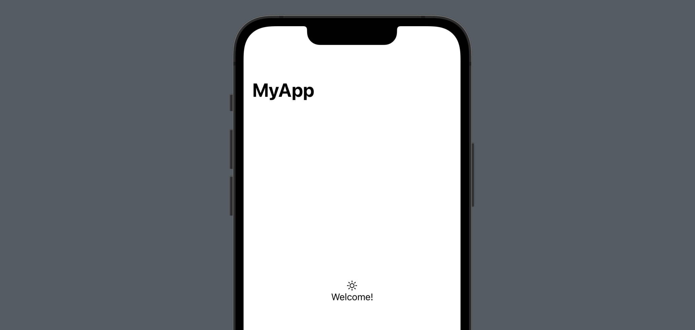
Just like the environment, preferences flow upwards continuously rather than just stopping at the first container. In our simple ContentView code, this means we can put navigationTitle() on a view inside the VStack, if we wanted:
NavigationStack {
VStack {
Image(systemName: "sun.max")
Text("Welcome!")
.navigationTitle("MyApp")
}
}That will give exactly the same result – the title preference just flows upwards until it’s used.
Of course, that might set off some alarm bells: what happens if we have multiple navigation titles? We can find out easily:
NavigationStack {
VStack {
Image(systemName: "sun.max")
.navigationTitle("Image")
Text("Welcome!")
.navigationTitle("Text")
}
.navigationTitle("VStack")
}As you’ll see when that code runs, the navigation view just picks the first one it finds – it will show “Image” as its title.
This kind of preference system is open to us to use as needed, although you should keep in mind that having data flowing freely both downwards and upwards might result in spaghetti code.
Our own preferences work in a similar way to navigationTitle():
It’s not identical, because we get to decide how the single value is selected – maybe we choose the first one like navigationTitle(), or maybe we combine values together somehow.
Enough talk: let’s try and implement a preference key ourselves, which will let a child view report its size upwards to containers.
The first step is to create a new struct that conforms to the PreferenceKey protocol. This requires us to provide a default value for the preference, just like EnvironmentKey, but now we also need to provide a reducer function – code that chooses which value to use, when several come in.
In our case, we want to track the width of some view, but if we get multiple widths coming in we’ll just track the last one:
struct WidthPreferenceKey: PreferenceKey {
static let defaultValue = 0.0
static func reduce(value: inout Double, nextValue: () -> Double) {
value = nextValue()
}
}Now we can make a view that sets a value for that preference, like this:
struct SizingView: View {
@State private var width = 50.0
var body: some View {
Color.red
.frame(width: width, height: 100)
.onTapGesture {
width = Double.random(in: 50...160)
}
.preference(key: WidthPreferenceKey.self, value: width)
}
}That changes its width whenever it’s tapped, which is helpful so you can see what’s happening.
Finally, we need to place that view somehow, and watch for changes to its preferences. This watching is done using the onPreferenceChange() modifier, which runs code of our choosing whenever some specific preference data changes, like this:
struct ContentView: View {
@State private var width = 0.0
var body: some View {
NavigationStack {
VStack {
SizingView()
}
.onPreferenceChange(WidthPreferenceKey.self) { width = $0 }
.navigationTitle("Width: \(width)")
}
}
}That code works great: you can run the project, then tap the red square to see its width adjust and be reflected in the navigation view.
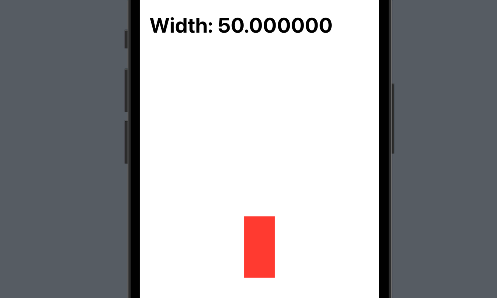
Of course, rather than just displaying the value, we can put it to use somehow. For example, we could use the value to set the widths of other, unrelated views, like this:
struct ContentView: View {
@State private var width = 0.0
var body: some View {
NavigationStack {
VStack {
SizingView()
Text("100%")
.frame(width: width)
.background(.red)
Text("150%")
.frame(width: width * 1.5)
.background(.green)
Text("200%")
.frame(width: width * 2)
.background(.blue)
}
.onPreferenceChange(WidthPreferenceKey.self) { width = $0 }
.navigationTitle("Width: \(width)")
}
}
}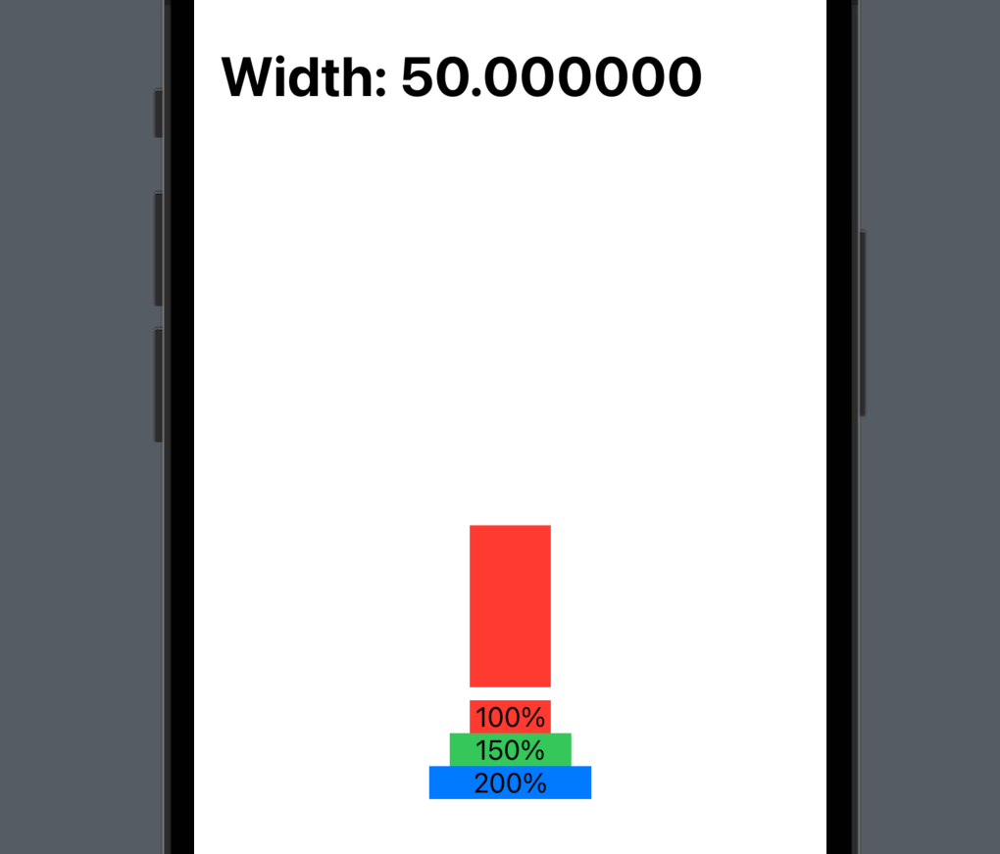
Or we can add multiple resizing views just fine, thanks to the reducer we wrote:
VStack {
SizingView()
SizingView()
SizingView()
}
.onPreferenceChange(WidthPreferenceKey.self) { width = $0 }
.navigationTitle("Width: \(width)")We made the reduce() method always use the final value it’s given, so when that code runs only the third SizingView will have its width reflected in the navigation title. Of course, it doesn’t have to be that way: we could make our reducer sum the preferences instead, like this:
static func reduce(value: inout Double, nextValue: () -> Double) {
value += nextValue()
}Now the final value for our preference will be the total of all three widths, and will automatically adapt when any of the three changes.
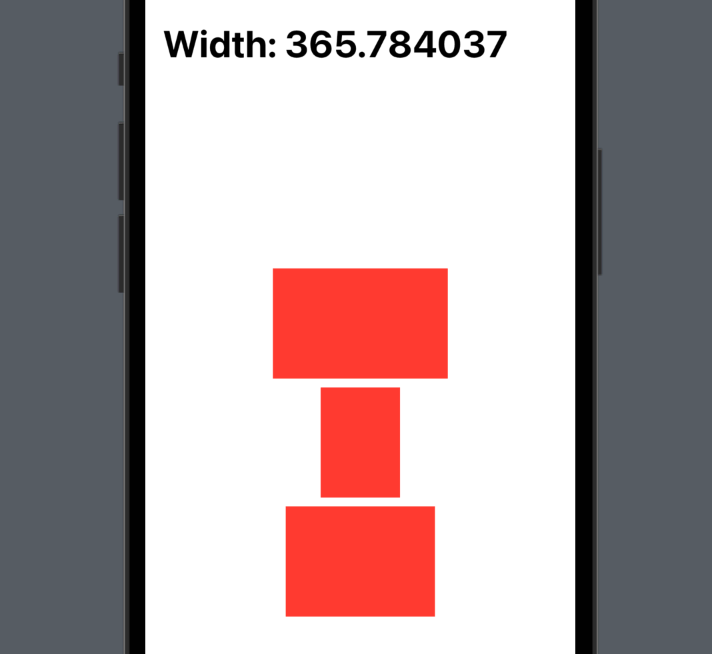
Even better, if you wanted to mimic the “first preference only” approach of navigationTitle(), it takes literally zero code:
static func reduce(value: inout Double, nextValue: () -> Double) {
}Because that never calls nextValue(), it means “you give me the first value and the next one, but I don’t care – do nothing with them.”
You’ve seen how preferences allow us to send data from a child view up to its ancestors, and how it’s up to us to decide what to do – if anything – with that information. Well, SwiftUI provides a handful of specialized preference modifiers that are specifically aimed at making it easier to share sizing data and make use of it easily.
To demonstrate this, we’re going to create a simplified copy of part of the Airbnb app: at the top of the app’s Explore tab there are some options you can select, and whichever one is selected shows a line underneath. Sure, we could do this by giving every icon an underline that gets shown or hidden depending on the selection status, but the Airbnb app uses just one line that moves around and resizes based on the category selection.
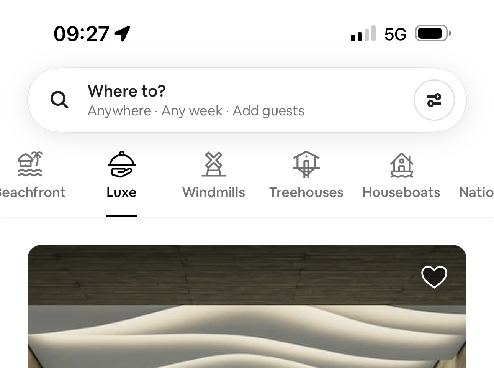
Solving this problem will demonstrate not only how the more advanced preferences work, but you’ll also see how preference data can be more complex – it’s definitely a fun problem to tackle.
First, we can define what one category in our app looks like. We’ll provide two properties here: one for the identifier, which will be things like “Beach”, “Golfing”, or “Tropical”, and one for the SF Symbol that will be used to add an icon. We’ll make this struct be Identifiable so we can loop over arrays of them in SwiftUI, and also Equatable so we can compare one category to another. Start with this code:
struct Category: Identifiable, Equatable {
let id: String
let symbol: String
}Next will be the preference data we want to share. Previously this was a simple number, but this time I want to share a custom struct containing two pieces of information: the category that it refers to, and an anchor. Anchors are opaque geometry stores, which means they can store a reference to some position and size on the screen but we can’t read it out directly because it wouldn’t be useful. Fortunately, SwiftUI knows how to read them for us, and in doing so automatically resolves the anchor’s geometry into coordinates that are useful for us.
If that sounds fuzzy, relax; it will make sense in a moment. For now, add this second struct to store the category and an anchor storing its geometry data:
struct CategoryPreference: Equatable {
let category: Category
let anchor: Anchor<CGRect>
}Next we’re going to add a third struct that conforms to PreferenceKey. This is similar to the preference key we wrote for SizingView, except now we’re going to send back an array of data all at once – we’ll collect whatever array of CategoryPreference values we’re given and add them into a collection of all such values
struct CategoryPreferenceKey: PreferenceKey {
static let defaultValue = [CategoryPreference]()
static func reduce(value: inout [CategoryPreference], nextValue: () -> [CategoryPreference]) {
value.append(contentsOf: nextValue())
}
}That completes all the underlying data we need for our work, so now we need two SwiftUI views to render it all: one to handle a single category button on the screen, and one to render all the buttons plus an underline and whatever else we want.
First, the category button. This will be given the category to show, along with a binding that will store which category is currently selected. This binding is important, as it allows our category button to adjust external state – to say “my category was selected” when it is tapped.
It looks like this:
struct CategoryButton: View {
var category: Category
@Binding var selection: Category?
var body: some View {
Button {
withAnimation {
selection = category
}
} label: {
VStack {
Image(systemName: category.symbol)
Text(category.id)
}
}
.buttonStyle(.plain)
.accessibilityElement()
.accessibilityLabel(category.id)
}
}We’ll come back to that in a moment, but first I want to create an initial version of ContentView, which has the job of showing several category buttons in a HStack. We’ll add more to this shortly, so I’ll also add a VStack where we can add extra things later, but the important part for now is that it has an array of categories and a single piece of state that stores the selected category – that’s what gets passed into CategoryButton as a binding.
Add this ContentView code now:
struct ContentView: View {
@State private var selectedCategory: Category?
let categories = [
Category(id: "Arctic", symbol: "snowflake"),
Category(id: "Beach", symbol: "beach.umbrella"),
Category(id: "Shared Homes", symbol: "house")
]
var body: some View {
VStack {
HStack(spacing: 20) {
ForEach(categories) { category in
CategoryButton(category: category, selection: $selectedCategory)
}
}
}
}
}At this point we have something fairly unimpressive: we’ve created the data model for our preferences, and also the views to show categories, but we haven’t actually linked them together. To do this means introducing two new modifiers: one to send the value upwards as a preference, and one to read the array of those values back out once they have been through our reducer function.
Now, previously we used the preference() modifier for sending a preference up to ancestors, but here we’re going to use a specialized preference specifically for working with geometry. This modifier is called anchorPreference() and takes three parameters:
CategoryPreferenceKey.self, just like we’d have with a simple preference..bounds to get the whole frame wrapped up.Anchor containing our bounds, and needs to convert that into whatever input your preference key expects. If you remember, we made ours work with CategoryPreference arrays, so we’ll convert the anchor into an array containing one CategoryPreference instance.All this is done by adding this single modifier to CategoryButton, below accessibilityLabel():
.anchorPreference(key: CategoryPreferenceKey.self, value: .bounds, transform: { [CategoryPreference(category: category, anchor: $0)] })So, we’re telling SwiftUI we want to express an anchor preference for the CategoryPreferenceKey, that it needs to use the bounds of the button we attached the preference to, and we want to receive that bounds as an anchor and place it inside a CategoryPreference object.
That sets the category preference key for each button, but we still need to add code to read the preference and act on it. This is where the second new modifier comes in: rather than just using onPreferenceChange() to read values coming in, we’re going to use overlayPreferenceValue(). This has the job of reading preferences and converting them into an overlay – it’s effectively a combination of onPreferenceChange() and overlay() in one modifier, which helps make our code simpler.
This is where SwiftUI performs a beautiful trick. Remember earlier when I said that anchors are opaque geometry stores? That means they contain geometry data, but don’t let us read that data back out because it wouldn’t have any meaning – just knowing X:35 Y:58 by itself doesn’t mean anything unless you know exactly what coordinate space you’re coming from and going to, for example.
SwiftUI solves this brilliantly using GeometryReader: if we use one of these anywhere in our view layout, we can pass an anchor to its proxy object and have it send back a relevant frame for us as a CGRect. That means the GeometryProxy figures out how to convert the original frame into whatever coordinate space our GeometryProxy is working in – it takes away all the hassle of figuring out where the two are in relation to each other, and just sends us back the bit we actually care about: a CGRect telling us the frame we actually want to use to refer to the original bounds we set with anchorPreference().
Enough chat, let’s put the code in place so you can see exactly how it works. Please add this modifier to the VStack in ContentView:
.overlayPreferenceValue(CategoryPreferenceKey.self) { preferences in
GeometryReader { proxy in
if let selected = preferences.first(where: { $0.category == selectedCategory }) {
let frame = proxy[selected.anchor]
Rectangle()
.fill(.primary)
.frame(width: frame.width, height: 2)
.position(x: frame.midX, y: frame.maxY)
}
}
}I’m going to break that down and walk through every line, but first I want you to build and run the code so you can see what it does – you should find you can now tap on any button to see a line animate between them, automatically moving and resizing so that it always underlines each button correctly. It’s a great effect, although I should repeat that it’s from Airbnb rather than something I came up with by myself!
Anyway, let’s break down the code:
overlayPreferenceValue() to specify we want to read in a particular preference key and convert it into an overlay. As a reminder, that means we want SwiftUI to place some kind of view over our VStack, and we’ll use the preference keys to figure out what that view should be.GeometryReader so we can evaluate our geometry somehow. This will automatically expand to fill all the available space, which is fine as an overlay because it will naturally fit the same space as the view it overlays.GeometryReader.offset() rather than position() you should use frame.minX because we’re providing a relative movement rather than trying to center the view in some exact location.The real magic in that code is proxy[selected.anchor], which takes care of all the geometry conversion for us – hopefully you can see now why Anchor is opaque!
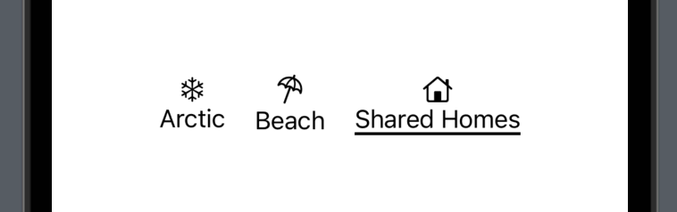
The real power of this approach is that the rest of our UI has no idea that preferences are being used at all, which means if we added more to the VStack it would Just Work™ without any special extra work from us.
For example, we could add a List below the buttons HStack, showing all the categories and letting the user select them that way:
List(categories, id: \.id) { category in
HStack {
Button(category.id) {
withAnimation {
selectedCategory = category
}
}
if selectedCategory == category {
Spacer()
Image(systemName: "checkmark")
}
}
}That adjusts selectedCategory when each row in the list is tapped, which triggers body being reinvoked and will update the overlay preference. If you try it out, you’ll see SwiftUI automatically moves the underline rectangle around, just like we had when tapping the buttons directly.
We can also show the selected category by adding another view to the VStack, below the List:
if let selectedCategory {
Text("Selected: \(selectedCategory.id)")
}Again, that will automatically update no matter how the selected category changes – we get both the underline and text updating smoothly, all thanks to SwiftUI’s preferences system.
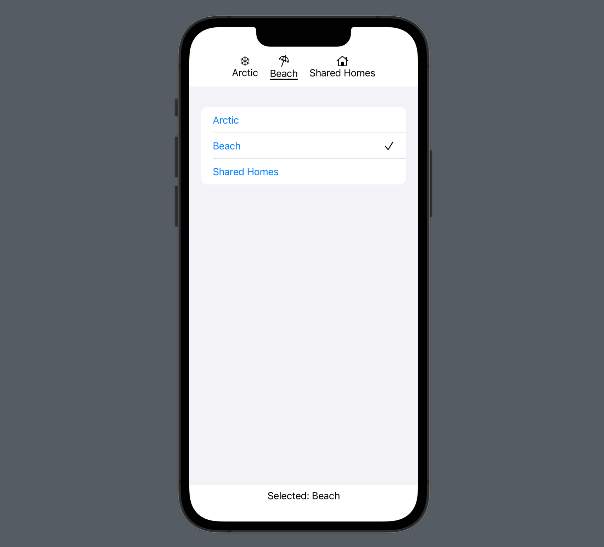
So, even though I think it takes a little understanding at first, I hope you can appreciate the power being exposed here: we’re able to send complex data to parent views, convert coordinate spaces, and more, all to quite elegantly achieve a very specific result.
Copyright © 2023 Paul Hudson, hackingwithswift.com.
You should follow me on Twitter.